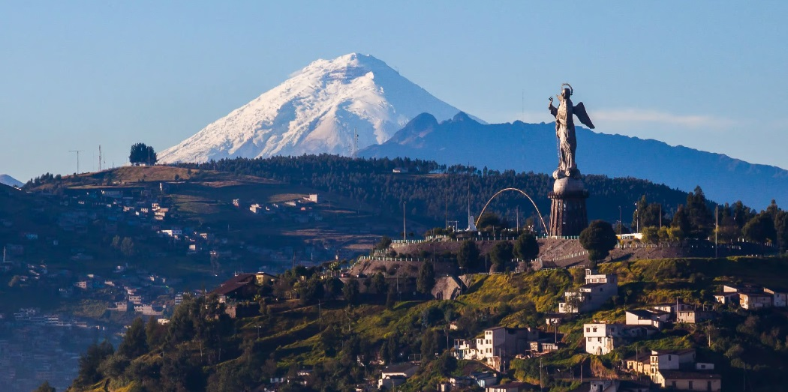
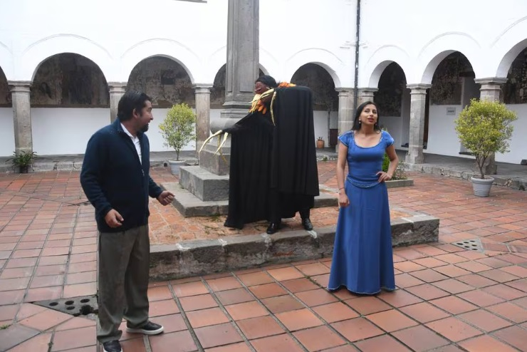
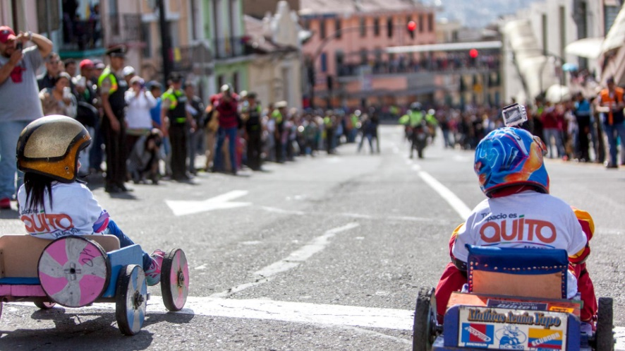

Descubre Quito
Explora Quito: Destinos, Rutas y Tradiciones
Destinos Imperdibles
Descubre los rincones y atracciones que hacen de Quito un destino único en el mundo.
Itinerarios
Embárcate en rutas temáticas que te llevarán a conocer la esencia de la capital desde diferentes perspectivas.
¡Viva Quito!
Experimenta la ciudad como un local, sumergiéndote en sus tradiciones, mercados y festividades.
